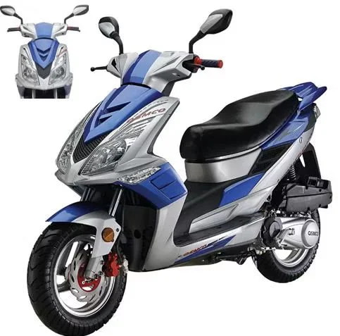

Технические характеристики

Основные параметры:
- 1. Название мопеда: QSMCO
- 2.Модель: HL50QT-42
- 3. Дата выпуска: 2018
- 4.Страна производства: Китай
- 5. Цвет: Синий
- 6. Рабочий объем двигателя:49куб.См kv:2
- 7. Двигатель и трансмиссия
- 7.1.Тип двигателя: Бензиновый/4-тактный
- 7.2.Тип топливо: Бензин
- 7.3. Запуск двигателя: Электростартер/кикстартер
- 7.4.Объем бака: 5л
- 7.5.Максимальная расчетная скорость: 50км/ч
- 7.6.Расход топлива на: 100км/ч 3.0л
- 7.7.Топливная система: Карбюратор
- 7.8.Номинальная груподъемность (чел): 2
- 7.9.Клапанный механизм: SOHC
- 7.10.Зажигание: C.D.I
- 7.11.Стартер: Электростартер/кикстартер
- 7.12. Система смазки: Разбрызгивание под давлением
- 7.13.Система охлаждения: Принудительное воздушное охлаждение
- 7.14.Тип переключения передач: Автоматическая CVT
- 7.15.Тип сцепления: Автоматическое
- 8. Характеристики
- 8.1.Максимальная скорость (км/ч): 50
- 8.2.Сухой вес (кг): 90
- 8.3.Разрешенная максимальная нагрузка (кг): 150
- 8.2.Высота сиденья (мм): 750
- 8.3.Общая длина (мм): 1960
- 8.4.Общая ширина (мм): 760
- 8.5.Общая высота (мм): 1100
- 8.6.Дорожный просвет (мм): 110
- 8.7.Колесная база (мм): 1360
- 9. Шасси и размеры
- 9.1.Тип рамы: Плоский скутер
- 9.2.Передняя подвеска: Телескопическая
- 9.3.Ход передней подвески (мм): 82
- 9.4.Задняя подвеска: Моноамортизатор
- 9.5.Ход задней подвески (мм): 70
- 9.6.Передняя шина: 120.70-12
- 9.7.Задняя шина: 120.70-12
- 9.8.Передний тормоз: Дисковый
- 9.9.Диаметр переднего тормоза (мм): 180
- 9.10.Задний тормоз: Барабанный
- 9.11.Диаметр заднего тормоза (мм): 110
- 9.12.ABS: Нет
- 10. Другие характеристики
- 10.1.Аккумулятор: 12V6Ah (YTX7A-BS)
- 10.2.Шлем и защитные дуги
- 10.3.Держатель для телефона
- 10.4.Кофр 40л